Manual de uso del formulario público para reservar los diferentes espacios de AldeaLab
Esta guía te explica paso a paso cómo reservar una sala de Aldealab desde el formulario público de la web. Tardarás alrededor de dos minutos en hacer una reserva sencilla.
¿Prefieres verlo en vídeo? Te lo contamos en menos de dos minutos:
Accede a la página de reservas desde el navegador de tu ordenador o tu móvil:
El formulario funciona para cualquier persona, pero la experiencia cambia ligeramente según si has iniciado sesión o no:
El formulario reconoce que eres tú y rellena automáticamente tus datos personales y tu dirección en el paso 6. Solo tienes que elegir la sala, las fechas y el horario.
Puedes reservar igualmente, pero tendrás que rellenar tus datos a mano en el paso 6 (NIF, nombre, dirección, etc.). El resto de pasos es idéntico.
Si vas a reservar a menudo, te ahorrarás tiempo en cada nueva reserva si entras con tu cuenta de Aldealab antes de abrir el formulario.
El formulario te muestra el catálogo completo de salas. Si sabes cuántas personas asistirán o necesitas servicios concretos (proyector, pizarra, conexión a videollamada, etc.), úsalos para acotar.
Si no estás seguro del aforo, déjalo en blanco — verás más opciones en el siguiente paso y podrás afinar después.
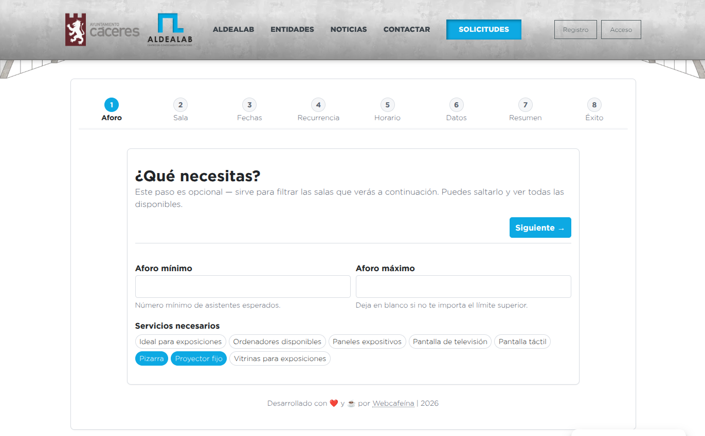
Verás las salas que cumplen los filtros del paso anterior, cada una con su nombre, aforo, edificio y los servicios que incluye.
Solo aparecen las salas que están disponibles para reservar. Si no ves ninguna, vuelve al paso 1 y relaja los filtros (por ejemplo, baja el aforo mínimo).
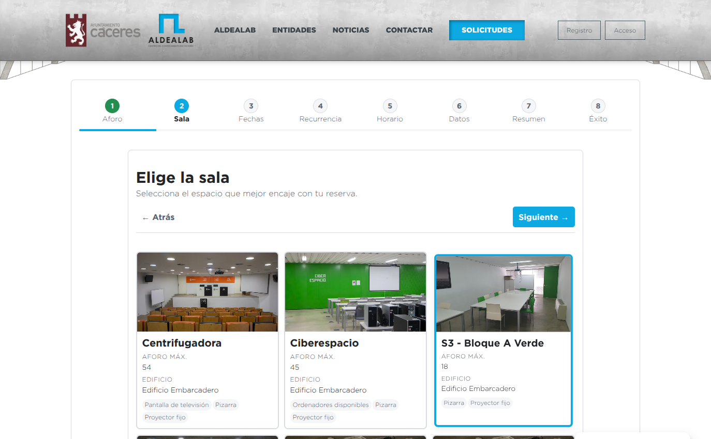
Decide si reservas para un solo día o si necesitas la sala de forma recurrente (por ejemplo, todos los lunes durante un trimestre).
Si dudas, empieza por una fecha única. Puedes hacer otra reserva más adelante si la necesitas.
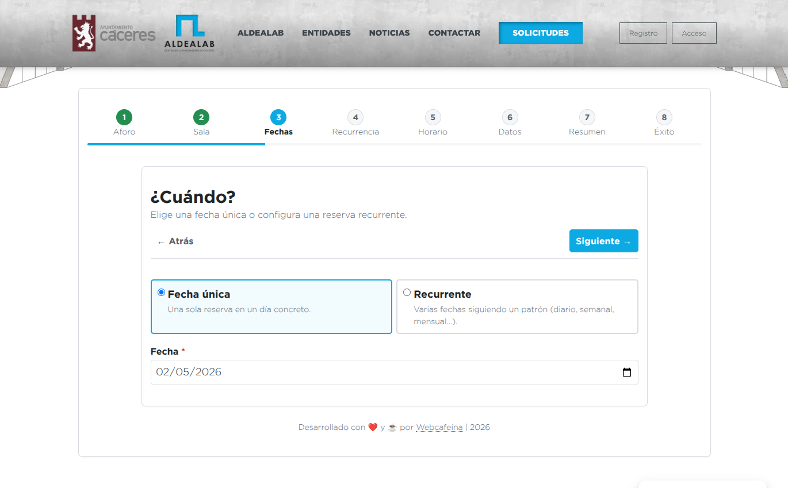
Solo aparece si en el paso anterior elegiste "Recurrente". Aquí decides cada cuánto se repite y hasta cuándo.
El sistema acepta como máximo un año de recurrencia desde la fecha de inicio. Si necesitas más tiempo, haz una nueva reserva al cabo del año.
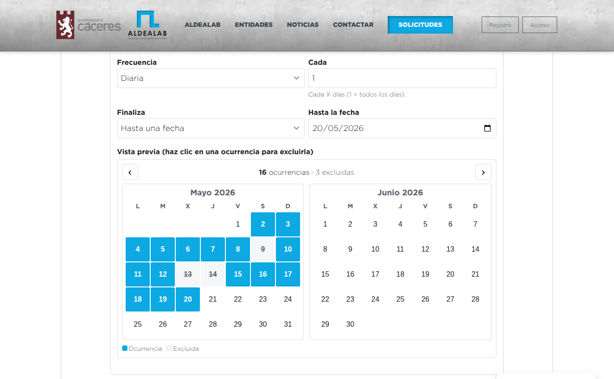
Indica a qué hora empieza y a qué hora termina la reserva. El mismo horario se aplicará a todas las fechas si la reserva es recurrente.
Reserva con un poco de margen al principio y al final — así tendrás tiempo para entrar, preparar lo que necesites y recoger sin agobios.
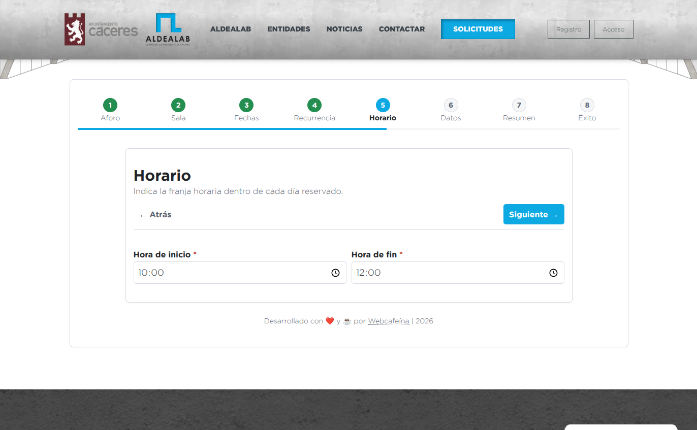
Esta es la información que aparecerá en el documento oficial de la reserva y la que usaremos para contactarte si hace falta.
Verás casi todos los campos rellenados con los datos de tu cuenta. Revísalos por si quieres ajustar alguno para esta reserva concreta (por ejemplo, una empresa o un teléfono distintos).
Tendrás que rellenar todos los campos a mano. Se guardarán para reservas futuras con el mismo email.
La provincia se elige de una lista cerrada con todas las provincias españolas. Si tu provincia no aparece es porque está mal escrita en algún dato previo — contacta con el equipo de Aldealab para corregirlo.
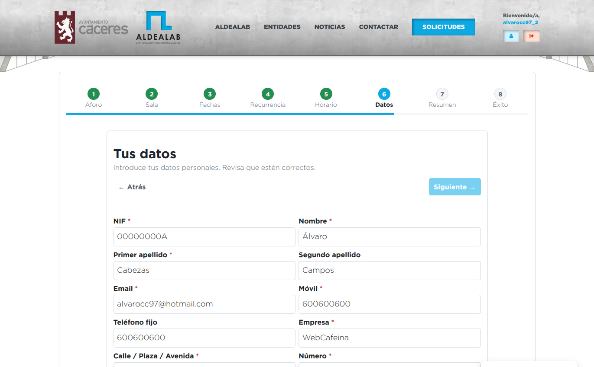
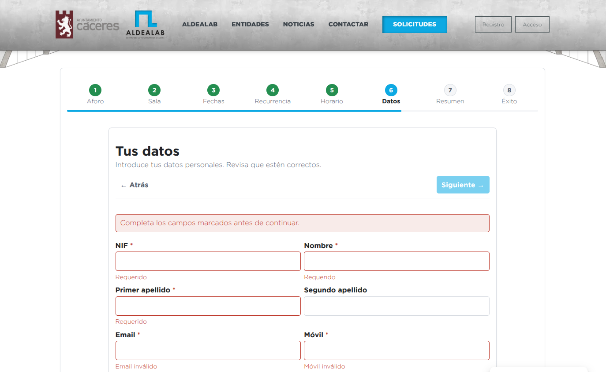
Antes de enviar la reserva verás un resumen completo con todo lo que has elegido. Es el momento de comprobar que no hay erratas.
El CAPTCHA aparece para evitar que sistemas automatizados envíen reservas falsas. Solo tienes que marcar la casilla; si te dejas, el botón de enviar no funciona.
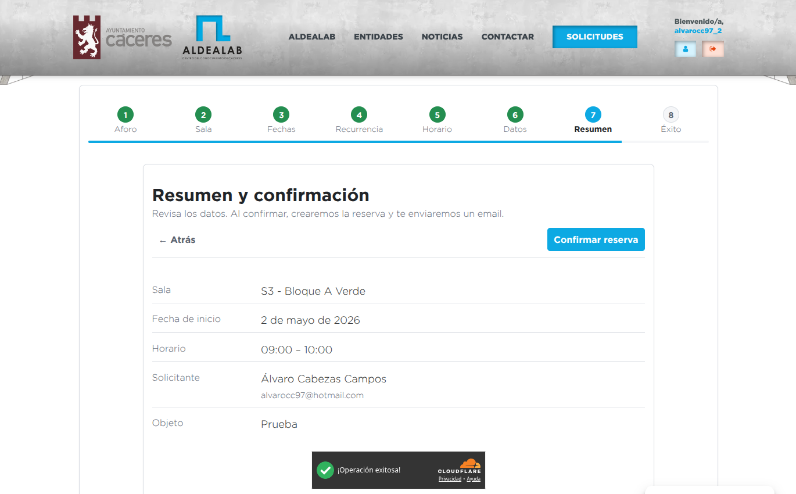
Si todo ha ido bien, verás una pantalla de confirmación con el número de tu reserva. No hace falta que hagas nada más — el sistema ya está avisando al equipo de Aldealab.
.ics) y añadirla a Outlook,
Google Calendar, Apple Calendar, etc.
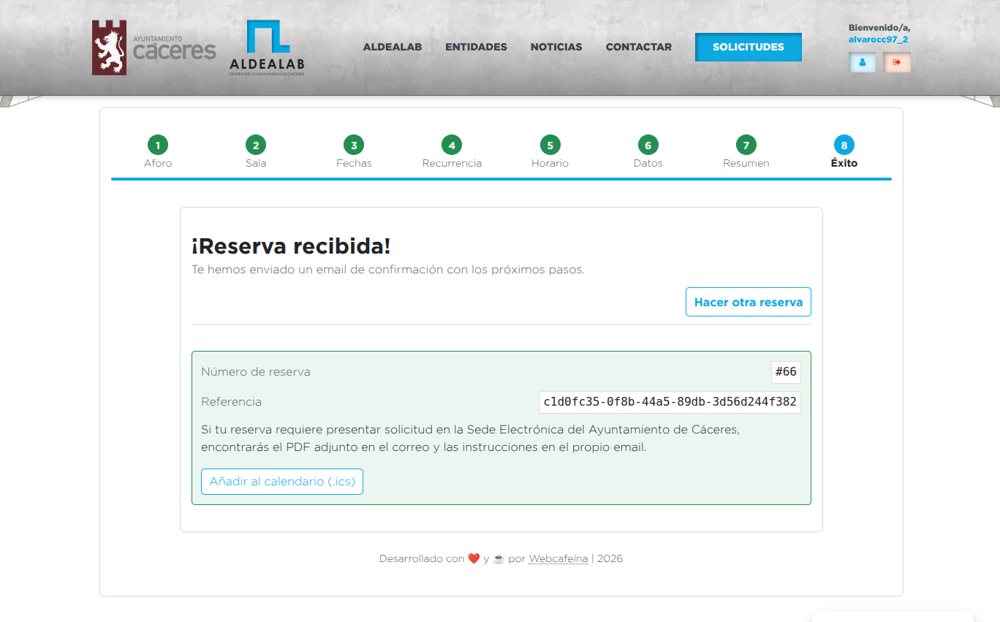
.ics bien
visible.
Tu reserva no queda confirmada al instante: pasa por una revisión rápida del equipo de Aldealab. A continuación se explica cada email que recibirás y qué significa cada uno.
Lo recibes en cuanto pulsas "Enviar reserva". Sirve como justificante y contiene:
.ics adjunto para añadirla a
tu calendario.
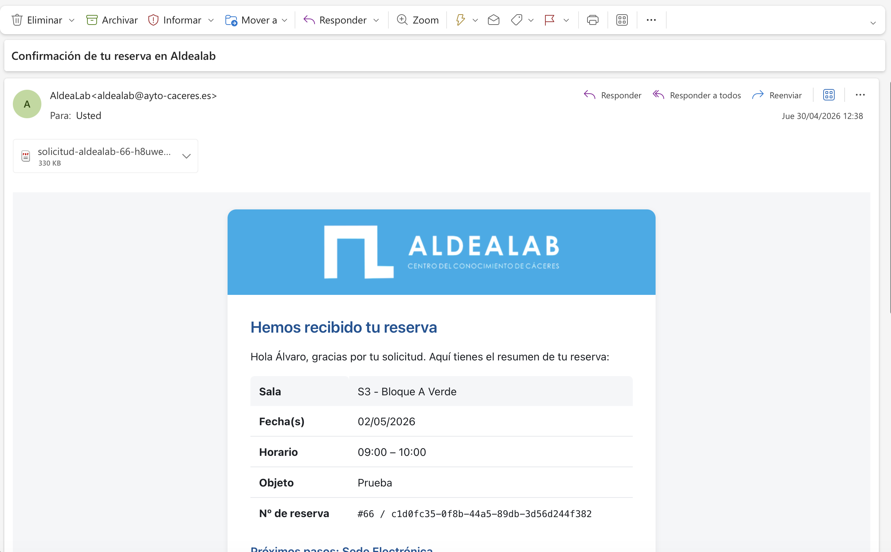
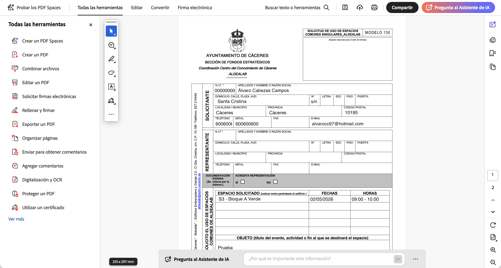
Hasta que el equipo la apruebe, la reserva está pendiente. Significa que ha llegado bien y está en cola. El equipo recibe una notificación y la revisa lo antes posible.
Cuando el equipo confirma tu reserva, recibes un nuevo correo: "¡Tu reserva ha sido confirmada!". La sala es tuya en las fechas y horario que indicaste.
Si por cualquier motivo finalmente no vas a usar la sala, avisa cuanto antes al equipo de Aldealab. Liberarla a tiempo permite que otra persona la pueda reservar.
En casos excepcionales (sala no disponible finalmente, incidencia, etc.) recibirás uno de estos correos:
No. La cancelación la hace el equipo de Aldealab. Escríbeles a aldealab@ayto-caceres.es indicando el número de reserva.
Igual que la cancelación: contacta con el equipo. Para cambios pequeños suele bastar con un correo; para cambios grandes a veces es más rápido cancelar y hacer una nueva reserva.
Sí. En el paso 3 marca "Recurrente" y configura el patrón en el paso 4 (cada lunes, cada dos semanas, etc.).
Para evitar reservas automatizadas hechas por programas. Solo tienes que marcar la casilla "No soy un robot"; no hay imágenes que descifrar.
Revisa tu carpeta de spam o correo no deseado. Si tampoco está ahí, contacta con aldealab@ayto-caceres.es indicando tu nombre y el día de la reserva.
Asegúrate de haber iniciado sesión antes de abrir el formulario. Si lo abriste primero, recarga la página tras iniciar sesión.